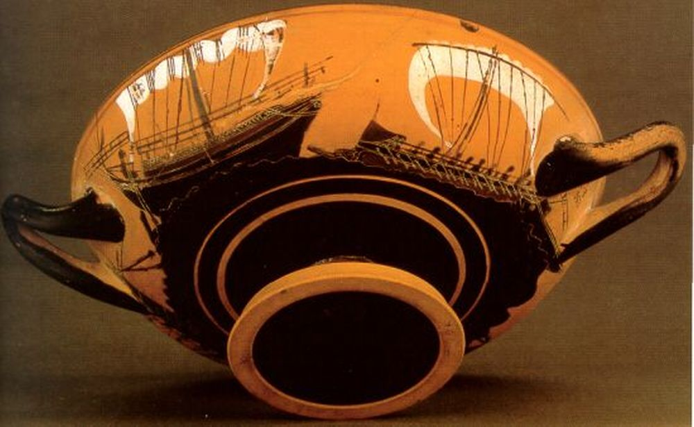
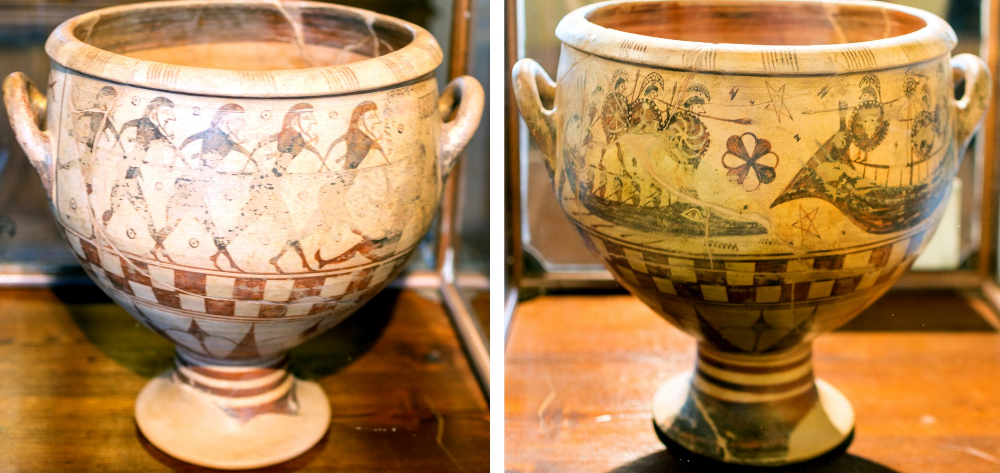
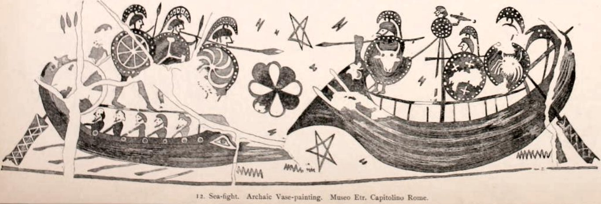
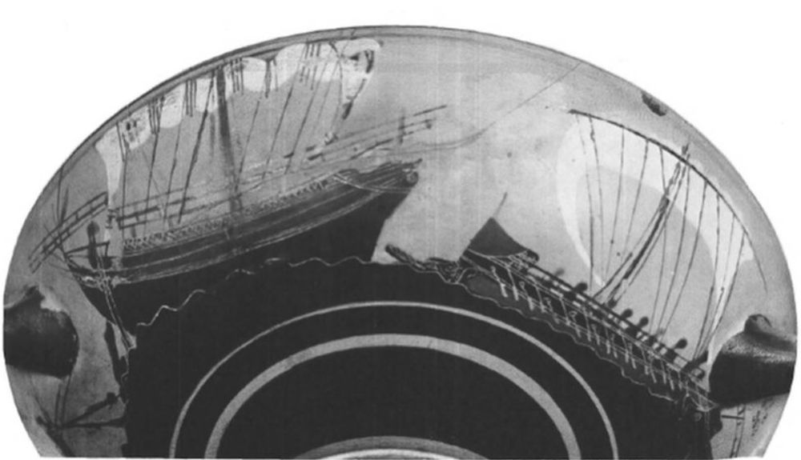
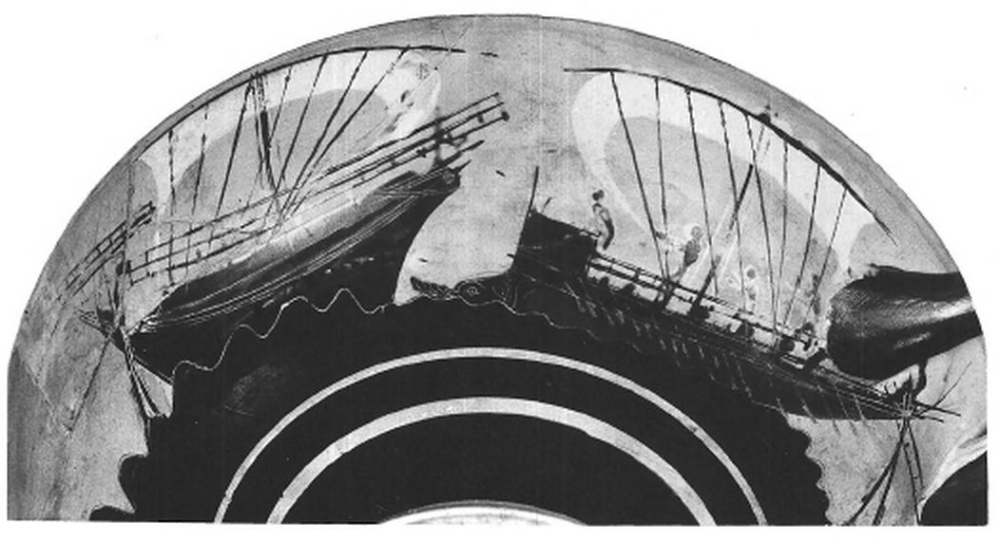

В предыдущей главе нашего рассказа мы пытались определить, что означают цифры в названия греческих и римских военных кораблей. Опираясь на текст Вегеция, нам удалось исключить одну из гипотез: это точно не число весел на одном борту античной галеры. Данное утверждение стало, пусть и маленьким, но шагом вперед. Однако чтобы продвинуться в наших поисках истины дальше, мы вынуждены будем сделать два шага назад и вернуться к тем кораблям ранней античности, которые стали предтечей столь почитаемой нами триеры и в названии которых фигурирует как раз общее число находящихся на них весел или гребцов. Вернемся к кораблям архаического периода истории Греции (750-480 гг. до н.э.)

Пиратский корабль, преследующий торговое судно. Первое изображение чисто парусного судна? Афинская ваза из Британского музея. Ок. 515 г. до н.э.
Нельзя сказать, что мы не касались этого периода прежде. Была достаточно обширная группа постов о гомеровских кораблях. Для тех, у кого нет времени для просмотра всех постов из этой подборки, можно ознакомиться хотя бы с одним из них.
Этот этап развития кораблестроения в Древней Греции хорошо освещен в литературе. Но явный акцент при этом сделан на военном кораблестроении. Причину такого перекоса показал профессор Джон Моррисон, который в предисловии к книге финского морского историка Кристоффера Эрикссона (CHRISTOFFER H. ERICSSON) о торговых кораблях классической античности («NAVIS ONERARIA. The Cargo Carrier ol late Antiquity. Studies in Ancient Ship Carpentry», 1984 г.) отметил:
«Военные корабли привлекали большую часть внимания историков, потому что время от времени они играли выдающуюся роль в судьбах морских наций на поворотах их истории, а также, более тривиально, потому , что их системы гребли представляли собой, а по большей части представляют и сейчас, возбуждающую нас головоломку. Торговые же суда с самой ранней эпохи выполняли свои законные и незаконные обязанности в Средиземном море и прилегающих к нему водах, увеличивая благосостояние и обеспечивая первоочередные потребности городского населения этого района земли.»
Эрикссон представлял собой то счастливое сочетание, которое радует каждого любителя морской истории. Он был опытным практиком в морском деле, а впоследствии переключился на работу в качестве главы Агентства морской истории Финской Археологической комиссии и профессора Университета Йювяскюля. И хотя упомянутая его книга посвящена в основном поздней Античности и во многом основана на изучении останков "Galley of Caligula", гребного корабля римского императора Калигулы, поднятого со дня озера Неми в Италии еще до 2-й мировой войны и уничтоженного то ли немцами, то ли итальянцами, то ли американцами – они все валят друг на друга – во время этой войны, она полезна своей трактовкой ранней истории торгового флота.
Эрикссон отмечает принятый в общем всеми морскими историками факт, что в поздней античности существовало деление на два типа кораблей: корабли длинные – μακρὰ ναῦς (макра наус; см., например, у Фукидида. На латыни – navis longa, длинный, т. е. военный корабль) и корабли круглые – στρογγύλη ναῦς (стронгулē наус; на латинском – navis onerarius т.е. грузовое судно). Это деление восходит еще к Геродоту:
πρώτῃ δὲ Φωκαίῃ Ἰωνίης ἐπεχείρησε. οἱ δὲ Φωκαιέες οὗτοι ναυτιλίῃσι μακρῇσι πρῶτοι Ἑλλήνων ἐχρήσαντο, καὶ τὸν τε Ἀδρίην καὶ τὴν Τυρσηνίην καὶ τὴν Ἰβηρίην καὶ τὸν Ταρτησσὸν οὗτοι εἰσὶ οἱ καταδέξαντες: ἐναυτίλλοντο δὲ οὐ στρογγύλῃσι νηυσὶ ἀλλὰ πεντηκοντέροισι.
Жители этой Фокеи первыми среди эллинов пустились в далекие морские путешествия. Они открыли Адриатическое море, Тирсению, Иберию и Тартесс. Они плавали не на “круглых” торговых кораблях, а на 50 весельных судах.
Геродот, История (1.163). Пер. Г. А. Стратановского
Не будем строго судить стиль переводчика: для уха современного читателя лучше бы звучало: «Они ходили не на “круглых” торговых судах, а на “пентеконторах”, 50 весельных кораблях.» Но это скорее не замечание, а придирка, которую просто обязан сделать каждый читатель, придерживающийся принятой в морском языке стилистики.
Мы уже обсуждали эту классификацию в самом начале нашего журнала. Сейчас же обратим внимание на одну частную ее сторону.
Некоторые наши современные писатели ставят знак равенства между «круглыми» и «чисто парусными» судами. Например, Лайонел Кассон прямо пишет:
In Greek, sailing ships were known as strongyla ploia "round ships" (as against "long ships," the men-of-war) or holkades.
У греков парусные корабли назывались strongyla ploia, «круглые корабли» (в противопоставление «длинным», военным кораблям) или holkades.
Ships and seamanship in the ancient world(1971), p. 169
При этом он в качестве примера, подтверждающего этот тезис, приводит как раз ссылку на процитированный выше отрывок из Геродота. Но разве по данному отрывку можно сделать вывод о том, что «круглые суда» обязательно чисто парусные?
Сторонники такой точки зрения считают, в частности, что уже при последнем мидийском царе Астиаге (585 — 550 гг. до н. э.) рядом друг с другом сосуществовали чисто парусные торговые суда и гребные военные корабли. Однако эта гипотеза не находит подтверждения в сохранившихся изобразительных материалах той эпохи – изображений чисто парусных кораблей среди них просто нет. Даже когда на одном изображении встречаются военный (пиратский?) корабль и торговое судно, как это имеет место на кратере Аристонота

Кратер, изготовленный Аристонотом, ориентировочно в 675-650 гг. до н.э., Западная Греция. Национальный музей этрусского искусства, вилла Джулия, Рим
Вот графическое изображение этой темы

«Круглый» торговый корабль, вовсе не является чисто парусным, а, по авторитетному мнению Моррисона и Уильямса («Greek Oared Ships»), также использует весла. Впрочем, Л.Кассон и Л. Баш сомневаются в этом. Их смущают лунообразный киль и высокие борта этого судна.
По сложившемуся к настоящему времени молчаливому согласию первое изображение чисто парусного корабля находится на кратере 515 г. до н.э. (см. фото в начале поста). Считается, что на изображении торговое судно под парусом пытается уйти от пиратского корабля, который использует одновременно как весла, так и парус.
На вазе изображены две последовательные сцены погони. На первой купец и пират идут под парусами (пират, как уже сказано, и на веслах).

Мы ранее подробно разбирали, что гребные военные корабли по ряду причин должны убирать паруса перед боем чтобы, в частности, подготовить пространство для действия абордажной команды. Именно это мы и наблюдаем на второй сцене погони, изображенной на кратере.

Гребцы, находящиеся к корме от мачты, освобождают свои места, берут парус на гитовы, разбирают фалы, после чего последует спуск реи на палубу и команда должна будет рубить мачту, поместить ее на опоры, а затем выстроиться вдоль борта в ожидании сигнала к абордажу.
Примем и мы за веху в нашем рассказе время появления изображения этого парусника. А вместе с этим будем считать, что все более ранние мореходные суда относятся к типу гребных или парусно-гребных кораблей. Т.е. и в том, и в другом случае они были оснащены веслами. Поэтому не удивительно, что у греков практически все они (за одним, быть может, исключением, о котором мы скажем ниже), имели названия, связанные с количеством весел, или, что тоже, с числом гребцов. Кристоф Курт в своей книге Seemännische Fachausdrücke bei Homer («Морские термины у Гомера», 1979) называет их «чисто техническими обозначениями размеров» (rein technischen Grössenbezeichnungen).
Но об этом мы поговорим в следующий раз.
P.S. Для любителей во всем докапываться до первоисточников приведем латинский текст эпиграфа:
Нuc ades, o quicumque meis advertere coeptis aurem oculosque potes, veras et percipe voces. impendas animum; nec dulcia carmina quaeras: ornari res ipsa negat contenta doceri.
Manil. ASTRONOMICON LIBER TERTIUS, 39